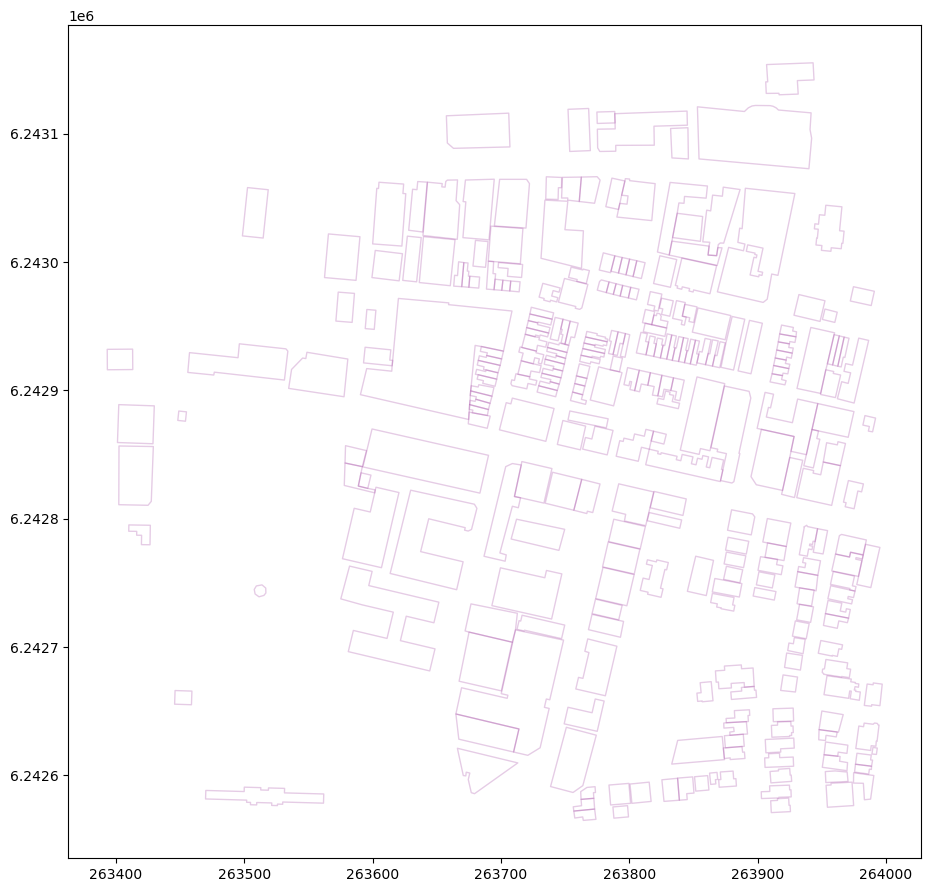
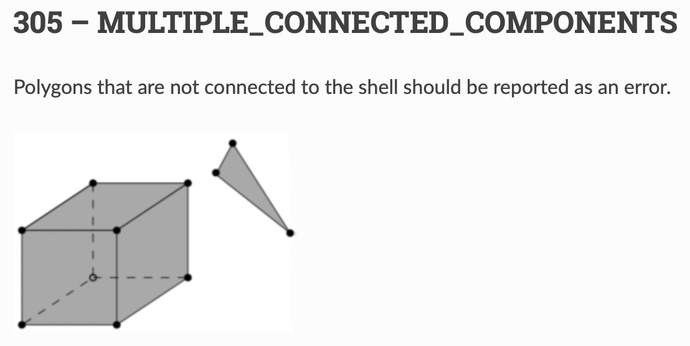
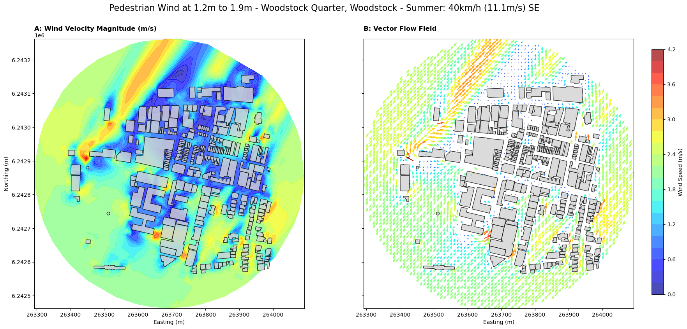
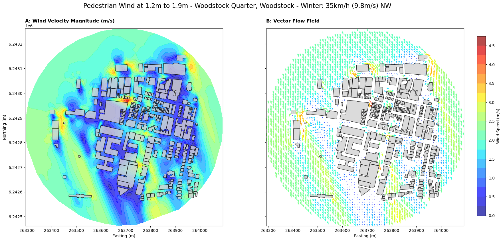
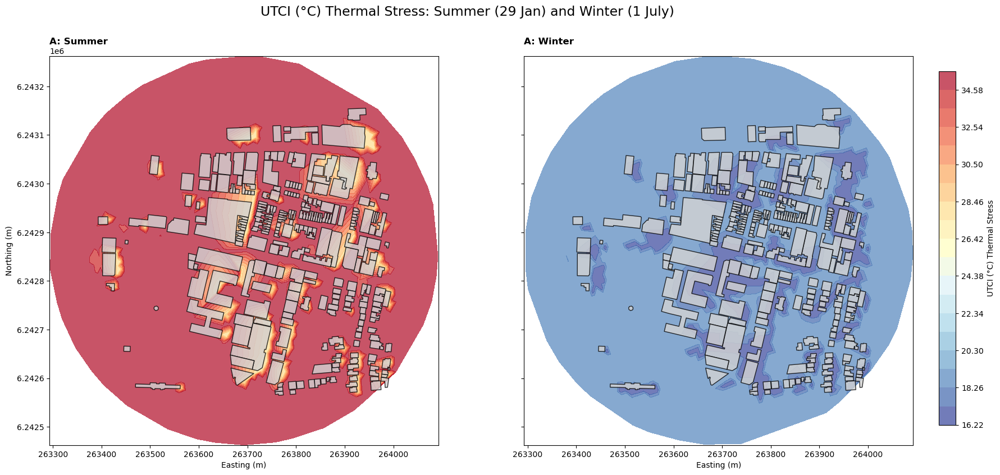
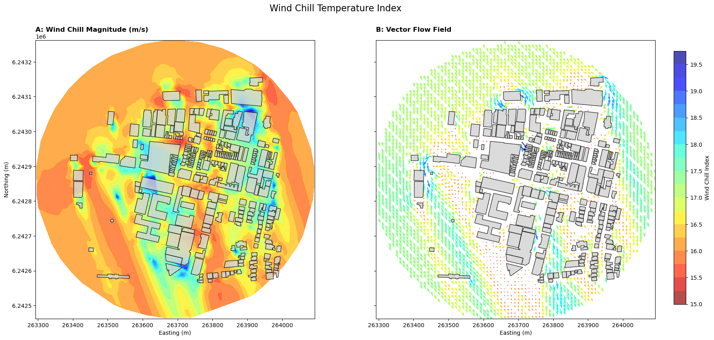

UrbanFlow (No Internet)#
While an internet connection is NOT necessary you will NEED to have sourced an osm.pbf.
To execute an Incompressible Fluid Flow simulation you will need to download and install OpenFoam –instructions just after 2. create a .STL file . below.
And to calculate a Universal Thermal Comfort Indicator (UTCI) for your own community you will NEED to have sourced a POWER_Regional_Monthly_1984_2025.csv; an extract of the ALLSKY_SFC_SW_DWN (All Sky Surface Shortwave Downward Irradiance) dataset.
These can be harvested from the NASA Prediction Of Worldwide Energy Resources (POWER) Project data access viewer.
The purpose of this NoteBook is to walk a user through the advanced usage of geo3D products.
1. allow the user to create a Level-of-Detail 1 (LoD1) 3D City Model.
2. create a .STL file . and OpenFOAM configuration files, with a very brief step-by-step walk-through to illustrate how to setup and execute an Incompresible Fluid Flow Computational Fluid Dynamics Simulation with OpenFOAM.
a. harvest the OpenFOAM result to estimate Pedestrian Wind Comfort (PWC) with
b. calculate a Universal Thermal Comfort Indicator (UTCI) in summer and winter, and
c. lastly estimate the Wind Chill Index
2. propose several Geography and Sustainable Development Education conversation starters for Secondary and Tertiary level students
This UrbanFlow (No Internet) geo3D processing option is meant for areas NO larger than 600 meters in diameter.
Simulations take resources (processing power, space) and time. The greater the number of features, in this case: buildings, the more resources and time is necessary. The purpose of this NoteBook is to provide a taste of what is possible.
# load the magic
import time
import datetime
from datetime import timedelta
from zoneinfo import ZoneInfo
import tempfile
import os
import sys
from itertools import chain
import math
import requests
import overpass
import copy
import json
import numpy as np
import pandas as pd
import topojson as tp
import shapely
from shapely.geometry import Point, Polygon, MultiPolygon, shape, polygon, box
from shapely.ops import snap, transform, unary_union
from shapely.strtree import STRtree
import pyproj
from osgeo import gdal, ogr, osr
import triangle as tr
from openlocationcode import openlocationcode as olc
import matplotlib.pyplot as plt
from matplotlib.patches import Polygon as MplPolygon
from matplotlib.collections import PatchCollection
#- import
import city3D
import openfoam
Tstart = time.time()
import warnings
warnings.filterwarnings('ignore')
A parameter.json defines the path and files.
jparams = json.load(open('wStock_param.json'))
#jparams = json.load(open('mamre_param.json'))
#jparams = json.load(open('sRiver_param.json'))
#jparams = json.load(open('saao_param5m.json'))
Harvest OpenStreetMap - interogate an osm.pbf (“Protocolbuffer Binary Format”) from within Jupyter and convert to .geojson.
PLEASE SUPPLY YOUR OWN osm.pbf.
Either crop an area directly from OpenStreetMap with the official tool, select a predefined area from any number of providers, such as Geofabrik, or…
… download your own. Provincial extracts for South Africa are available here: http://download.openstreetmap.fr/extracts/africa/south_africa/
# Input OSM PBF file
input_pbf = "./data/CapeTown.osm.pbf"
#input_pbf = "./data/south-africa-latest.osm.pbf"
Please enter a location –center this on your area of interest
center_lat, center_lon = -33.92819, 18.44359 # wStock | wQuarter
#center_lat, center_lon = -33.93379, 18.45964 # sRiver | durham
#center_lat, center_lon = -33.934516, 18.477391 # saao
def get_bbox(lat, lon, radius_m):
# Rough approximation for WGS84
deg_lat = radius_m / 111111.0
deg_lon = radius_m / (111111.0 * math.cos(math.radians(lat)))
return [lon - deg_lon, lat - deg_lat, lon + deg_lon, lat + deg_lat]
# Example usage
minx, miny, maxx, maxy = get_bbox(center_lat, center_lon, 300)
aoi_geom = box(minx, miny, maxx, maxy)
# 2. Wrap it in your home-baked GeoDataFrameLite
aoi = city3D.GeoDataFrameLite({
'id': ["area_of_interest"],
'lat': [center_lat],
'lon': [center_lon],
'geometry': [aoi_geom]
})
aoi.crs = "EPSG:4326"
#len(geoms)
Only harvest what we need from the osm.pbf.
start = time.time()
gdal.UseExceptions()
gdal.SetConfigOption("OGR_GEOMETRY_ACCEPT_UNCLOSED_RING", "NO")
#gdal.SetConfigOption("USE_CUSTOM_INDEXING", "NO")
# GDAL Virtual File System (VSI) to avoid writing to disk
geojson_vsimem = "/vsimem/temp.geojson"
#- GDAL VectorTranslate to extract only buildings & fix geometries
gdal.VectorTranslate(
geojson_vsimem, # Output as in-memory GeoJSON
input_pbf, # Source OSM PBF file
format="GeoJSON", # Output format
layers=["multipolygons"], # Extract only multipolygons
options=["-where", "building IS NOT NULL", "-makevalid",
"-spat", str(minx), str(miny), str(maxx), str(maxy)] # Filter buildings & fix geometries
)
#- execute and return GeoDataFrameLite | home-baked gdf
gdf = city3D.read_vsimem_geojson("/vsimem/temp.geojson")
#- cleanup VSI Memory
gdal.Unlink(geojson_vsimem)
end = time.time()
print('runtime:', str(timedelta(seconds=(end - start))))
runtime: 0:00:02.030620
ERROR 1: Non closed ring detected.
ERROR 1: Non closed ring detected.
gdf.head(2)
#len(gdf)
| amenity | building | geometry | name | office | osm_id | osm_way_id | other_tags | shop | tourism | type | |
|---|---|---|---|---|---|---|---|---|---|---|---|
| 0 | None | commercial | MULTIPOLYGON (((18.4461933 -33.9265241, 18.446... | None | None | 13501234 | None | "addr:city"=>"Cape Town","addr:housename"=>"Th... | None | None | multipolygon |
| 1 | None | train_station | MULTIPOLYGON (((18.4459821 -33.9256137, 18.446... | Woodstock Station | None | None | 65768975 | "addr:city"=>"Cape Town","addr:suburb"=>"Woods... | ticket | None | None |
# Convert valid strings, ignore None/NaN
def safe_convert(tag_string):
if isinstance(tag_string, str):
try:
# Replace "=>" with ":" and fix newlines
formatted_string = "{" + tag_string.replace("=>", ":").replace("\n", " ") + "}"
return json.loads(formatted_string) # Parse safely
except json.JSONDecodeError:
return {} # Return empty dict on failure
return {} # Return empty dict if NaN or None
# Apply conversion function
gdf["tags"] = gdf["other_tags"].apply(safe_convert)
# Extract values safely - Normalize the 'tags' column to create a new DataFrame
tags_df = pd.json_normalize(gdf['tags'])
# Join the new columns back to the original GeoDataFrame
gdf = pd.concat([gdf, tags_df], axis=1)
# (Optional) Drop the original 'tags' column
gdf = gdf.drop(columns=['other_tags'])
# Ensure a single 'osm_id' column
if 'osm_id' in gdf.columns:
if 'osm_way_id' in gdf.columns:
gdf['osm_id'] = [o if pd.notna(o) else w
for o, w in zip(gdf['osm_id'], gdf['osm_way_id'])]
gdf = gdf.drop(columns=['osm_way_id'])
elif 'osm_way_id' in gdf.columns:
gdf = gdf.rename(columns={'osm_way_id': 'osm_id'})
gdf = gdf[gdf.geometry.apply(lambda x: x.within(shapely.unary_union(aoi.geometry)))]
gdf.crs = "EPSG:4326"
gdf.head(2)
| amenity | building | geometry | name | office | osm_id | shop | tourism | type | tags | ... | service:bicycle:repair | service:bicycle:second_hand | service:bicycle:tools | layer | research | parking | animal | animal_boarding | unisex | residential | |
|---|---|---|---|---|---|---|---|---|---|---|---|---|---|---|---|---|---|---|---|---|---|
| 0 | None | commercial | MULTIPOLYGON (((18.4461933 -33.9265241, 18.446... | None | None | 13501234 | None | None | multipolygon | {'addr:city': 'Cape Town', 'addr:housename': '... | ... | NaN | NaN | NaN | NaN | NaN | NaN | NaN | NaN | NaN | NaN |
| 1 | None | train_station | MULTIPOLYGON (((18.4459821 -33.9256137, 18.446... | Woodstock Station | None | 65768975 | ticket | None | None | {'addr:city': 'Cape Town', 'addr:suburb': 'Woo... | ... | NaN | NaN | NaN | NaN | NaN | NaN | NaN | NaN | NaN | NaN |
2 rows × 76 columns
ts = gdf[gdf['building'].notna()]
#len(ts)
print('\n', len(ts), "buildings have been harvested from", input_pbf)
282 buildings have been harvested from ./data/CapeTown.osm.pbf
ts.head(2)
| amenity | building | geometry | name | office | osm_id | shop | tourism | type | tags | ... | service:bicycle:repair | service:bicycle:second_hand | service:bicycle:tools | layer | research | parking | animal | animal_boarding | unisex | residential | |
|---|---|---|---|---|---|---|---|---|---|---|---|---|---|---|---|---|---|---|---|---|---|
| 0 | None | commercial | MULTIPOLYGON (((18.4461933 -33.9265241, 18.446... | None | None | 13501234 | None | None | multipolygon | {'addr:city': 'Cape Town', 'addr:housename': '... | ... | NaN | NaN | NaN | NaN | NaN | NaN | NaN | NaN | NaN | NaN |
| 1 | None | train_station | MULTIPOLYGON (((18.4459821 -33.9256137, 18.446... | Woodstock Station | None | 65768975 | ticket | None | None | {'addr:city': 'Cape Town', 'addr:suburb': 'Woo... | ... | NaN | NaN | NaN | NaN | NaN | NaN | NaN | NaN | NaN | NaN |
2 rows × 76 columns
# basic cleaning to harvest building=* (no building:part=*) and building=levels tags only
#- we only want buildings with =levels data
ts = (
ts.dropna(subset=['building:levels'])
.assign(**{'building:levels': pd.to_numeric(ts['building:levels'], errors='coerce')})
.query("`building:levels` != 0")
)
#- without building:part
ts = ts[ts.get("building:part").isnull()] if "building:part" in ts else ts
#ts = ts.explode()
print('\n\033[1m', jparams['FocusArea'], 'has \033[0m', len(ts), 'buildings')
Woodstock has 274 buildings
# have a look
ts.tail(2)
| amenity | building | geometry | name | office | osm_id | shop | tourism | type | tags | ... | service:bicycle:repair | service:bicycle:second_hand | service:bicycle:tools | layer | research | parking | animal | animal_boarding | unisex | residential | |
|---|---|---|---|---|---|---|---|---|---|---|---|---|---|---|---|---|---|---|---|---|---|
| 318 | toilets | toilets | MULTIPOLYGON (((18.440959 -33.9279434, 18.4410... | None | None | 1304482079 | None | None | None | {'building:levels': '1', 'unisex': 'yes'} | ... | NaN | NaN | NaN | NaN | NaN | NaN | NaN | NaN | yes | NaN |
| 319 | None | residential | MULTIPOLYGON (((18.4456281 -33.9273695, 18.445... | None | None | 1304501184 | None | None | None | {'addr:city': 'Cape Town', 'addr:housename': '... | ... | NaN | NaN | NaN | NaN | NaN | NaN | NaN | NaN | NaN | student |
2 rows × 76 columns
#- coordinate reference system
ts.crs
<Geographic 2D CRS: EPSG:4326>
Name: WGS 84
Axis Info [ellipsoidal]:
- Lat[north]: Geodetic latitude (degree)
- Lon[east]: Geodetic longitude (degree)
Area of Use:
- name: World.
- bounds: (-180.0, -90.0, 180.0, 90.0)
Datum: World Geodetic System 1984 ensemble
- Ellipsoid: WGS 84
- Prime Meridian: Greenwich

We need the Projected Coordinate Reference System.
#- estimate utm: internal geopandas function
ts.estimate_utm_crs()
<Projected CRS: EPSG:32734>
Name: WGS 84 / UTM zone 34S
Axis Info [cartesian]:
- E[east]: Easting (metre)
- N[north]: Northing (metre)
Area of Use:
- name: Between 18°E and 24°E, southern hemisphere between 80°S and equator, onshore and offshore. Angola. Botswana. Democratic Republic of the Congo (Zaire). Namibia. South Africa. Zambia.
- bounds: (18.0, -80.0, 24.0, 0.0)
Coordinate Operation:
- name: UTM zone 34S
- method: Transverse Mercator
Datum: World Geodetic System 1984 ensemble
- Ellipsoid: WGS 84
- Prime Meridian: Greenwich
Fill in the proper espg in the cell below
#- fill <Projected CRS: EPSG:32734> from above here epsg = EPSG:32734
epsg = 'EPSG:32734'
#project blds
ts = ts.to_crs(epsg)
#project aoi
aoi = aoi.to_crs(epsg)
Now we process.
aoibuffer = aoi.copy()
def buffer01(row):
with np.errstate(invalid='ignore'):
return row.geometry.buffer(150, cap_style=3, join_style=2)
#buffer_dist = 150
aoibuffer['geometry'] = aoibuffer.apply(buffer01, axis=1)
#- suppose 'aoi' is your GeoDataFrameLite or list of geometries
geoms = aoibuffer['geometry'].tolist()
#- combine all geometries into a single union
combined_geom = shapely.unary_union(geoms) # returns Polygon or MultiPolygon
#- compute bounding box
minx, miny, maxx, maxy = combined_geom.bounds
extent = [minx - 250, miny - 250,
maxx + 250, maxy + 250]
Now the DEM
one is available at raster
gdal.SetConfigOption("GTIFF_SRS_SOURCE", "GEOKEYS")
gdal.UseExceptions()
# set the path and nodata
OutTile = gdal.Warp(jparams['projClip_raster'],
jparams['in_raster'],
dstSRS=epsg,
srcNodata = jparams['nodata'],
#- dstNodata = 0,
#-- outputBounds=[minX, minY, maxX, maxY]
outputBounds = [extent[0], extent[1], extent[2], extent[3]])
OutTile = None
#- convert raster to XYZ in-memory
#- virtual in-memory path
xyz_mem_path = "/vsimem/temp_xyz.xyz"
gdal.Translate(xyz_mem_path, jparams['projClip_raster'], format="XYZ")
#- read XYZ from GDAL's in-memory file
xyz_vsimem = gdal.VSIFOpenL(xyz_mem_path, "rb")
xyz_bytes = gdal.VSIFReadL(1, gdal.VSIStatL(xyz_mem_path).size, xyz_vsimem)
gdal.VSIFCloseL(xyz_vsimem)
#- cleanup in-memory file
gdal.Unlink(xyz_mem_path)
0
prepare to harvest elevation
# set the path to the projected, cliped elevation
src_filename = jparams['projClip_raster']
src_ds = gdal.Open(src_filename)
gt_forward = src_ds.GetGeoTransform()
rb = src_ds.GetRasterBand(1)
Buildings
#- simplify geometry
ts = city3D.GeoDataFrameLite(ts)
geojson_dict = json.loads(ts.to_json())
for feat in geojson_dict["features"]:
if feat.get("type") is None:
feat["type"] = "multipolygon"
if feat.get("geometry") is None:
feat["geometry"] = {"type":"MultiPolygon","coordinates":[]}
topo = tp.Topology(geojson_dict, prequantize=False, winding_order='CCW_CW')
simplified_geojson = topo.toposimplify(0.25).to_geojson()
ts = city3D.GeoDataFrameLite.from_json(simplified_geojson)
ts.crs = epsg
# prepare to plot (more buildings = more time)
start = time.time()
ts_copy = ts.copy()
geoms = ts_copy["geometry"].tolist()
tree = STRtree(geoms)
#- Query the tree for overlaps
# This returns two arrays: 'i' (index in geoms we are checking) and 'j' (index in the tree it overlapped with)
# Vectorized query: fastest way to find overlaps
i, j = tree.query(geoms, predicate="overlaps")
#- filter self-matches and get unique indices of all involved buildings
mask = i != j
overlap_idx = set(i[mask])
new_df1 = ts_copy.iloc[list(overlap_idx)].reset_index(drop=True)
end = time.time()
print('runtime:', str(timedelta(seconds=(end - start))))
runtime: 0:00:00.012832
Plot
Browse the saved './data/topologyFig' at your leisure
#- plot
def plot_geometries(df, ax=None, facecolor='none', edgecolor='purple', alpha=0.5):
if ax is None:
fig, ax = plt.subplots(figsize=(10,10))
patches = []
for geom in df['geometry']:
if geom is None:
continue
if isinstance(geom, Polygon):
# Exterior ring
patches.append(MplPolygon(list(geom.exterior.coords), closed=True))
# Interiors (holes)
for interior in geom.interiors:
patches.append(MplPolygon(list(interior.coords), closed=True))
elif isinstance(geom, MultiPolygon):
for poly in geom.geoms:
patches.append(MplPolygon(list(poly.exterior.coords), closed=True))
for interior in poly.interiors:
patches.append(MplPolygon(list(interior.coords), closed=True))
pc = PatchCollection(patches, facecolor=facecolor, edgecolor=edgecolor, alpha=alpha)
ax.add_collection(pc)
ax.autoscale()
ax.set_aspect('equal')
return ax
# Example usage:
fig, ax = plt.subplots(figsize=(11, 11))
plot_geometries(ts_copy, ax=ax, facecolor='none', edgecolor='purple', alpha=0.2)
if len(new_df1) > 0:
plot_geometries(new_df1, ax=ax, facecolor='none', edgecolor='red', alpha=0.5)
#-- save
plt.savefig('./data/topologyFig', dpi=300)
#plt.show()

|
Challenges will be highlight in ‘Red’ |
|
or none |
|
|


Please ensure the quality of the value-added product and the source data.
If necessary; edit OpenStreetMap and fix the challenge please.
And remember.
Many Planet.osm mirrors (like the one recommended above) release a fresh .osm.pbf EVERYDAY!
Give the OpenStreetMap server at least a day before attempting the process again.
Alchemy is a process. Please be patient.
We assume a building level is 2.8 meters high and add another 1.3 meters (to account for the roof) and create a new building_height attribute .
The Python code to execute the .bldHeights function is in the city3D.py script
# -- execute function. write geoJSON
dis = city3D.bldHeights(ts)
start = time.time()
dis_c = dis.copy()
dis_c.drop(dis.index[dis['building'] == 'bridge'], inplace = True)
dis_c.drop(dis.index[dis['building'] == 'roof'], inplace = True)
end = time.time()
print('runtime:', str(timedelta(seconds=(end - start))))
runtime: 0:00:00.002491
print(len(dis), 'buildings have been harvested from the osm.pbf for the', jparams["FocusArea"], 'area')
274 buildings have been harvested from the osm.pbf for the Woodstock area
dis_c.head(2)
| osm_id | address | building | building:levels | building:use | building:flats | beds | residential | amenity | social_facility | operator | building_height | min_height | plus_code | footprint | geometry | |
|---|---|---|---|---|---|---|---|---|---|---|---|---|---|---|---|---|
| 0 | 13501234 | The Woodstock Exchange 66-68 Albert Road Woods... | commercial | 6.0 | NaN | NaN | NaN | NaN | None | NaN | Signatura | 18.1 | 0.0 | 4FRW3CFW+69W | [[(263928.922, 6243053.284), (263890.36, 62430... | POLYGON ((263928.92246 6243053.28384, 263890.3... |
| 1 | 65768975 | Woodstock Station Woodstock Cape Town | train_station | 3.0 | NaN | NaN | NaN | NaN | None | NaN | NaN | 9.7 | 0.0 | 4FRW3CFW+PFM | [[(263906.88, 6243153.778), (263907.77, 624314... | POLYGON ((263906.880496 6243153.777931, 263907... |
prepare the elevation for the TIN
#-
#dis_c = dis.copy()
#- prepare xyz (more buildings = more time)
start = time.time()
# Convert bytes to DataFrame
xyz_str = xyz_bytes.decode("utf-8") # Decode to string
dtype_spec = {
"x": np.float32, # Reduce precision from float64 to float32 (saves memory)
"y": np.float32,
"z": np.float32
}
df = pd.read_csv(pd.io.common.StringIO(xyz_str), delimiter=" ", header=None,
names=["x", "y", "z"], dtype=dtype_spec) # in memory fastest
#- Create the shapely 'geometry' column directly (Vectorized) and GeoDataFrameLite | home-baked gdf
df['geometry'] = df.apply(lambda row: Point(row['x'], row['y']), axis=1)
gdf = city3D.GeoDataFrameLite(df)
gdf.crs = epsg
# --- cleanup ---
gdf = gdf[gdf['z'] != jparams['nodata']]
gdf.reset_index(drop=True, inplace=True)
print(len(gdf))
end = time.time()
print('runtime:', str(timedelta(seconds=(end - start))))
3249
runtime: 0:00:00.042877
The Python code to execute the city3D.functions are in the city3D.py script
#- harvest the building vertices, combine with the elevation, create regions and segments for Triangle
coords, regions, segments = city3D.prepareTri(gdf, dis_c, aoibuffer)
Triangle
A = dict(vertices=np.array(coords), segments=np.array(segments), #holes=np.array(holes),
regions=np.array(regions))
# 'p' = Triangulate the PSLG: Delauney triangulation with segments (building outlines) as constraints.
# 'Y' = Do NOT add Steiner points
# 'A' = Attribute triangles with region IDs
# 'z' = Zero-based indexing (prevents index errors)
Tr = tr.triangulate(A, 'pYAz')
#- the vertices
final_verts_2d = Tr['vertices']
#- round to 3 decimals to match your get_pt_idx rounding
z_cache = {(row.x, row.y): row.z for row in gdf.itertuples()}
## -- we triangulate in 2D and project into 3D space. the vertices of the building outlines need a 'z'-value
final_verts_3d = []
for x, y in final_verts_2d:
x_r, y_r = x, y
# 2. Check if we already have the Z value in our GDF points
if (x_r, y_r) in z_cache:
z = z_cache[(x_r, y_r)]
else:
# 3. Only query the raster if the point is a new vector/Steiner vertex
z = float(city3D.rasterQuery2(x, y, gt_forward, rb))
final_verts_3d.append([x, y, z])
final_verts_3d = np.array(final_verts_3d)
#s- eparate triangles by their Region ID for CityJSON
tris = Tr['triangles']
tri_attr = Tr['triangle_attributes'].flatten()
CityJSON
#-
minz = gdf['z'].min()
maxz = gdf['z'].max()
The Python code to execute the .output_cityjson function is in the city3D.py script
# -- execute function. create CityJSON
crs = epsg[5:]
city3D.output_cityjson(extent, minz, maxz, tris, tri_attr, final_verts_3d, dis, jparams, gt_forward, rb, crs)
Go over to Ninja the online CityJSON viewer and explore!
You are welcome to further investigate the quality of a 3D Model.
The val3dity web app will test CityJSON geometric primitives.
If you parse the result of this notebook through val3dity it will return a report with an invalid TINRelief and error.
This particular area contains Buildings with courtyards. The courtyards (polygons) are islands of terrain disconnected from the larger TINRelief (shell); thus the error*. |
 |
* Don’t take my word for it. Test and see for yourself! saao_param.json (South African Royal Observatory, Cape Town) will produce a 100% topologically correct Open Geospatial Consortium (OGC) standard LoD1 3D model that conforms to the ISO 19107 spatial schema for 3D primatives [connecting and planar surfaces, correct orientation of the surfaces and watertight volumes]
To understand the value and usefulness of a 3D City Model; parse the result of this Notebook through CityJSONspatialDataScience.ipynb to workthrough an example of:
population estimation and
a calculation of Building Volume per Capita, and
estimate the Annual Average Solar (photovoltaic) Potential, per home.
As always; you are welcome to raise an issue. I depend on you to help me improve.
Tend = time.time()
print('runtime:', str(timedelta(seconds=(Tend - Tstart)))) #previous [2023] sRiver: 0:02:12.004094 | wStock: 07:09:57
runtime: 0:00:06.268627
2. OBJ#
#- .obj
start = time.time()
x_off, y_off, max_bld_h, max_z_abs, buildingsOBJ = city3D.exportOBJ(dis, extent, "./result/wStockNoInternet.obj")
end = time.time()
print('runtime:', str(timedelta(seconds=(end - start))))
runtime: 0:00:00.283914
src_ds = None
3. openFOAM Case Writer#
create folders and files for openFOAM
Fill in the details about your community:
nu (viscosity): sea-level or elevated (above 800m)
and
z0 (roughness)*: can be water, open (flat or rolling plains), rural (scattered houses surrounded by scrubland / agriculture), village, town and suburb (includes forests), urban suburb and city (areas with tall-ish buildings) or metro (Skyscrapers/Metropolitan areas)
* These are The European Wind Atlas (EWA) standards for roughness; which define the land surface’s impact on wind speed, typically represented by the roughness length (\(z_0\)), and measures the height at which wind speed theoretically becomes zero.
nu = 'sea-level'
z0 = 'urban suburb and city'
#z0 = 'village, town and suburb'
Fill in the details about the wind:
xx_inlet: wind speed in m/s
xx_deg: wind direction in degrees
-you might want do this twice. once for summer and once for winter.
#- speed ~ durham: summer 11.1, winter 9.8 | wQuarter: summer 7.2, winter 6.9 | mamre: summer 13.8, winter 7.2
#- direction ~ durham: summer 135, winter 315 | wQuarter: summer 210, winter 340 | mamre: summer 190, winter 0
#- summer
Su_inlet = 7.2
Su_deg = 210
#- winter
Wu_inlet = 6.9
Wu_deg = 340
With geo3D; OpenFOAM configuration files come in two flavours (two simulation options). There are other higher-order solvers but geo3D only creates openFOAM configuration files for two:
These both use Reynolds-Averaged approaches to model turbulence.
While they use the same physics-based turbulence models, such as \(𝑘 − 𝜔\) SST or \(𝑘 − 𝜖\), they differ in how they treat time and capturing fluctuations.
Feature |
||
|---|---|---|
Objective |
Solves for the time-independent mean flow. |
Captures large-scale unsteady patterns over time |
Solvers |
|
|
Effectiveness |
Will often, especially in a complex urban environment, NOT converge |
Good. |
Computational Cost |
Lower; solves for a single converged state |
Higher; solves many iterations for each time step |
When to execute |
Preliminary site analysis and rapid visualisation |
Detailed and finescale analysis that includes vortex shedding and gustiness |
The RANS solver is efficient but will often NOT capture the behaviour of the wind realistically –wind doesn’t just flow; it pulses and swirls.
Nevertheless; for the purposes of geo3D the RANS solver is more than enough.
The urbanFlow.ipynb component of geo3D provides a taste of what is possible… but you are welcome to interogate your community with a higher-order solver.
Summer
#- openfoam configuration files.
openfoam.write_openfoam_case('./openfoam/wStock/rans/summer/', extent, x_off, y_off, max_bld_h,
buildingsOBJ, nu, z0,
Su_inlet, Su_deg,
mode='RANS')
Winter
#- openfoam configuration files.
openfoam.write_openfoam_case('./openfoam/wStock/rans/winter/', extent, x_off, y_off, max_bld_h,
buildingsOBJ, nu, z0,
Wu_inlet, Wu_deg,
mode='RANS')
3. Simulation#
We will now very briefly walk-through a Incompressible Fluid Flow Analysis with OpenFOAM –so that you can do your own community.
Please have a look at xxx.
Step |
||
|---|---|---|
Run Ubuntu via Windows Subsystem for Linux (WSL2) |
Run Ubuntu via Canonical Multipass virtual machine |
|
1 — Open terminal |
Open Windows Terminal or PowerShell |
Open macOS terminal: Launchpad → terminal |
2 — Install WSL2 or Multipass |
run: |
Download Multipass for MacOS |
3 — Start Ubuntu |
Type |
|
4 — Open Ubuntu shell |
A Linux (Bash) terminal opens automatically |
|
5 — Add OpenFOAM repository |
|
Same as Windows (run inside the Multipass shell) |
6 — Update package list |
|
|
|
|
|
8 — Configure user environment |
|
Similar to Windows (inside the Multipass shell) |
9 — Verify installation |
|
|
10 — Get started |
mount your working folder to Ubuntu. |
mount your working folder to Ubuntu. |
11 — Navigate into working folder |
|
|
12 — Execute (mesh + simulation) |
Same as macOS |
i. |
13 — Shut it Down |
|
|
extract the /polyMesh/points, owner, faces, neighbour and /{some number}/U datafiles of the Incompressible Fluid Flow Analysis result to the respective location: ../result/openfoam/season
a. Pedestrian Wind Comfort (PWC)#
In this section we extract wind speeds, from the openFOAM result, at typical pedestrian height (1.2 – 1.9 m) and categorize comfort levels. We evaluate Pedestrian Wind Comfort (PWC) to identify how vertical architectural forms interact with local wind regimes.
Modern investigations into Wind Canyons and Downwash Effects have led to localized safety indicators. The most notable of these is the Lawson Comfort Criteria (Lawson, T.V. 1978). Lawson defines comfort levels (m/s) based on the probability of wind speeds exceeding specific thresholds for activities like “Sitting,” “Standing,” or “Walking.”
PWC provides a direct spatial measure of urban livability. By identifying “Acceleration Zones,” we can evaluate how neighborhoods perform under the local winds. This analysis builds on the work of (Blocken, B; et al. 2012) and directly supports SDG 11: Sustainable Cities and Communities by ensuring public spaces remain safe and usable year-round.
In this section, we analyze the results fro our SimScale CFD-driven (Incompresible Fluid Flow Analysis) simulation framework to explore Tier 3 local indicators of wind safety at a neighbourhood level. We evaluate the performance of our site under the two most frequent wind directions:
The Summer South-Easter at a punchy 40 km/h (11.1m/s)
A zesty 35 km/h (9.8m/s) Winter North-Wester
#- will take time if the points, neighbour, owner, faces and the 1000/U files from the SimScale post-processing.zip download is large
start = time.time()
#- harvest the data
summer_path = './result/openfoam/wStock/rans/summer'
summerPed_dfFull, center_x_utm, center_y_utm = city3D.reconstruct_openfoam_results(summer_path, Su_deg, center_lat, center_lon, radius=400)
summerPed_df = summerPed_dfFull[(summerPed_dfFull['Z'] >= 1.2) & (summerPed_dfFull['Z'] <= 1.9)].copy()
end = time.time()
print('runtime:', str(timedelta(seconds=(end - start))))
summerPed_df.head(2)
runtime: 0:00:03.088073
| X | Y | Z | U | V | u_mag | |
|---|---|---|---|---|---|---|
| 5223 | 263934.010356 | 6.242597e+06 | 1.428325 | 0.778432 | 2.606741 | 2.720488 |
| 5226 | 263935.084122 | 6.242581e+06 | 1.362813 | 1.024544 | 2.402710 | 2.612031 |
Ratio |
Local Speed (umag) |
Lawson Category (Typical) |
|---|---|---|
< 0.5 |
< 5.5 m/s |
Sitting / Long-term |
0.5 - 0.75 |
5.5 - 8.3 m/s |
Standing / Short-term |
0.75 - 1.0 |
8.3 - 11.1 m/s |
Strolling / Walking |
1.0 - 1.2 |
11.1 - 13.3 m/s |
Business Walking |
> 1.2 |
> 13.3 m/s |
Uncomfortable / Distress |
def classify_lawson(r_ratio):
if r_ratio < 0.5:
return "Sitting/Long-term (Outdoor Dining)"
elif r_ratio < 0.75:
return "Standing/Short-term (Bus Stop)"
elif r_ratio < 1.0:
return "Strolling (Sightseeing)"
elif r_ratio < 1.2:
return "Business Walking (Commuting)"
else:
return "Uncomfortable/Distress"
# --- 4. LAWSON COMFORT ANALYSIS ---
# Your R calculation: u_pedestrian / u_inlet
# Since your SimScale run shows 11.1 m/s (40 km/h) as the inlet condition:
summerPed_df['R'] = summerPed_df['u_mag'] / Su_inlet
summerPed_df['lawson_class'] = summerPed_df['R'].apply(classify_lawson)
#-
len(summerPed_df)
3097
summerPed_df.head(3)
| X | Y | Z | U | V | u_mag | R | lawson_class | |
|---|---|---|---|---|---|---|---|---|
| 5223 | 263934.010356 | 6.242597e+06 | 1.428325 | 0.778432 | 2.606741 | 2.720488 | 0.377846 | Sitting/Long-term (Outdoor Dining) |
| 5226 | 263935.084122 | 6.242581e+06 | 1.362813 | 1.024544 | 2.402710 | 2.612031 | 0.362782 | Sitting/Long-term (Outdoor Dining) |
| 5227 | 263943.264877 | 6.242592e+06 | 1.529181 | 0.825730 | 2.388943 | 2.527623 | 0.351059 | Sitting/Long-term (Outdoor Dining) |
#print(summerPed_df[['U', 'V', 'u_mag']].head())
#print(summerPed_df[['U', 'V']].dtypes)
summerPed_df.lawson_class.unique()
array(['Sitting/Long-term (Outdoor Dining)',
'Standing/Short-term (Bus Stop)'], dtype=object)
# Get a percentage breakdown for your results section
print(summerPed_df['lawson_class'].value_counts(normalize=True) * 100)
lawson_class
Sitting/Long-term (Outdoor Dining) 99.967711
Standing/Short-term (Bus Stop) 0.032289
Name: proportion, dtype: float64
#- plot
fig, axes = city3D.plot_wind_analysis(summerPed_df, ts_copy, center_x_utm, center_y_utm, radius=400,
title_suffix="Woodstock Quarter, Woodstock - Summer: 40km/h (11.1m/s) SE")
plt.show()

The Winter North-Wester
#- will take time if the points, neighbour, owner, faces and the 1000/U files is large
start = time.time()
#- harvest the data
winter_path = './result/openfoam/wStock/rans/winter'
winterPed_dfFull, center_x_utm, center_y_utm = city3D.reconstruct_openfoam_results(winter_path, Wu_deg, center_lat, center_lon, radius=400)
winterPed_df = winterPed_dfFull[(winterPed_dfFull['Z'] >= 1.2) & (winterPed_dfFull['Z'] <= 1.9)].copy()
end = time.time()
print('runtime:', str(timedelta(seconds=(end - start))))
winterPed_df.head(2)
runtime: 0:00:03.402358
| X | Y | Z | U | V | u_mag | |
|---|---|---|---|---|---|---|
| 4570 | 263503.677809 | 6.242592e+06 | 1.412170 | 0.453573 | -1.168934 | 1.253848 |
| 4572 | 263490.755859 | 6.242599e+06 | 1.520494 | 0.844124 | -1.641944 | 1.846219 |
# --- 4. LAWSON COMFORT ANALYSIS ---
# Your R calculation: u_pedestrian / u_inlet
# Since your SimScale run shows 9.8 m/s (35 km/h) as the inlet condition:
winterPed_df['R'] = winterPed_df['u_mag'] / Wu_inlet
winterPed_df['lawson_class'] = winterPed_df['R'].apply(classify_lawson)
len(winterPed_df)
3048
winterPed_df.lawson_class.unique()
array(['Sitting/Long-term (Outdoor Dining)',
'Standing/Short-term (Bus Stop)'], dtype=object)
# Get a percentage breakdown for your results section
print(winterPed_df['lawson_class'].value_counts(normalize=True) * 100)
lawson_class
Sitting/Long-term (Outdoor Dining) 99.80315
Standing/Short-term (Bus Stop) 0.19685
Name: proportion, dtype: float64
fig, axes = city3D.plot_wind_analysis(winterPed_df, ts_copy, center_x_utm, center_y_utm, radius=400,
title_suffix="Woodstock Quarter, Woodstock - Winter: 35km/h (9.8m/s) NW")
plt.show()

b. Universal Thermal Comfort Indicator (UTCI)#
In this section we combine CFD-derived wind fields, from the previous section, with local solar radiation and temperature data and provide a Decoupled Thermal Analysis to estimate summer and winter comfort.
While traditional planning treats temperature as a uniform regional value, modern investigations into Urban Heat Islands (UHI) require more granular indicators. The most robust of these is the Universal Thermal Comfort Index (UTCI) (Bröde, P; et al. 2012). UTCI is a “felt temperature” (\(^\circ\text{C}\)) that integrates air temperature, humidity, wind speed, and radiant heat into a single value representing human physiological stress.
UTCI provides a spatial measure of climate vulnerability, identifying “Heat Traps” and “Wind Canyons.” This analysis builds on the work of (Fiala, D; et al. 2012) and aligns with SDG 11: Sustainable Cities and Communities.
We now utilize the decoupled simulation framework (wind velocity harvested from OpenFoam CFD) and merge this with Solar Geometry: A custom Python ray-caster to determine the Shade vs. Sun status using NASA POWER climatology.
By merging these, we explore Tier 3 local indicators of comfort at a neighborhood level, evaluating the site under seasonal extremes:
a warm January Summer South-Easter and
the cold July Winter North-Wester.
This Universal Thermal Comfort Indicator (UTCI) uses a Decoupled Thermal Analysis. We simulate the aerodynamic wind flow via OpenFOAM’s community-standard RANS (Reynolds-Averaged Navier-Stokes) solver and combine it with localized solar radiation and humidity data.
While this provides an excellent approximation of pedestrian comfort, a Robust Heat-Transfer Simulation would be required for a formal Environmental Impact Assessment. Such an analysis accounts for Surface Albedo (e.g., how much heat a dark road absorbs vs. a light pavement) and Thermal Mass (how buildings, the earth, etc. store heat)
The following UTCI formula is a simplified polynomial regression of the original UTCI Fiala model. The ‘Gold Standard’ reference for the full version is:
def calculate_utci_robust(ta, mrt, v, rh):
"""
Standard UTCI calculation based on the multi-node human heat balance model.
ta: Air Temperature (°C)
tr: Mean Radiant Temperature (°C)
v: Wind speed at 10m height (m/s)
rh: Relative Humidity (%)
"""
# Offset from air temperature
dtp = mrt - ta
# Fundamental UTCI equation constants (Approximation)
# This captures the non-linear interaction of wind and radiation
utci = ta + (0.344 * dtp) + (0.000185 * ta * dtp) - (0.013 * v * dtp) - \
(0.007 * (v**2)) + (0.012 * rh) - (0.0004 * ta * rh)
return round(utci, 2)
The polynomial approximation above is used to implement the human heat balance model within a geospatial framework.
The specific coefficients (the numbers) are the Standard Regression Constants often used in tools like ladybug_comfort or the pythermalcomfort Python package to avoid running the full, computationally expensive 6th-order Fortran code.
We already have the wind from openFOAM; all we have to do is harvest it at the appropriate height
#- we have the wind
summerPed_dfFull.head(2)
| X | Y | Z | U | V | u_mag | |
|---|---|---|---|---|---|---|
| 0 | 263934.932219 | 6.242581e+06 | 0.432742 | 0.171846 | 0.733318 | 0.753184 |
| 1 | 264035.417570 | 6.242754e+06 | 0.457813 | 0.321730 | 0.684202 | 0.756070 |
For a ‘taste’ of simulation, we don’t need to model humidity changes spatially. In urban environments, RH is typically treated as a constant boundary condition for the entire site based on climate averages readily available from a number of online sources such as TimeAndDate.
Summer (SE Wind): Cape Town’s South Easter is a drying wind. RH typically sits between 45% and 55%.
Winter (NW Wind): This is the rain-bearing wind. RH is high, often 75% to 90%.
UTCI Summer#
Fill in the proper SUMMER Temperature: ta and Relative Humidity: rh below
#- summer
#- temp. ~ durham: summer 27, winter 14 | wQuarter: summer 28, winter 16 | mamre: summer 26, winter 17
#- rel. hum. ~ durham: summer 50, winter 80 | wQuarter: summer 40, winter 83 | mamre: summer 70, winter 77
Sta = 28.0
Srh = 40.0
This is the most critical variable after wind. It represents the sum of all radiation hitting a person. In our simplified geo3D model, we bypass a full radiation simulation by using the Shade vs. Sun binary.
The Shade Value. If a point is shaded by a building (using the ray-caster):
where; \({T}_{a}\) is (Air Temperature)
Logic: In the shade, the person is shielded from direct short-wave solar radiation, so the radiant environment is dominated by the ambient air temperature.
The Sun Value, If a point is exposed to the sun:
Logic: In the direct sunlight, the person is exposed to direct short-wave solar radiation, so we have an additional Solar MRT Offset; \(Δ {MRT}_{solar}\). The value represents the additional Radiant Heat a person feels when standing in direct sunlight versus standing in the shade..
Fill in the SUMMER date, time and timezone below
list of tz time zones available: https://en.wikipedia.org/wiki/List_of_tz_database_time_zones#List
# Example for ..., Jan 29th at 14:00 (Summer Heat)
dt_summer = datetime.datetime(2025, 1, 29, 14, 0, tzinfo=ZoneInfo("Africa/Johannesburg"))
#-
sun_azimuth, sun_altitude= city3D.get_sun_position(center_lat, center_lon, dt_summer)
print('Azimuth:', sun_azimuth)
print('Altitude:', sun_altitude)
Azimuth: 279.54385872974785
Altitude: 46.949421046388224
#- calculate if a person is standing in the shadows or direct sunlight
shadows = city3D.calculate_shadows(dis_c, sun_azimuth, sun_altitude)
Calculate the Solar MRT Offsets
To do your own community PLEASE SUPPLY YOUR OWN POWER_Regional_Monthly_1984_2025.csv; an extract of the ALLSKY_SFC_SW_DWN (All Sky Surface Shortwave Downward Irradiance) dataset.
These can be harvested from the NASA data access viewer –settings: Regional, User Community: Renewable, Temporal Level: Monthly and Annually, Select Location: draw a rectangle (~state / province. NOT country), Time Extent: 1984-2025, Parameter: All Sky Surface Shortwave Downward Irradiance), Format: csv.**
Here we interogate the POWER Monthly Radiation dataset. This is a global dataset that uses NASA satellite observations and weather models to tell us exactly how much solar radiation hits a specific location on Earth.
What we are harvesting:
Parameter:
ALLSKY_SFC_SW_DWN(Global Horizontal Irradiance): a 30-year historical average of solar radiation. This ensures our communities solar potential is based on long-term climate trends rather than a single year of weather.Source: POWER Monthly Radiation via the NASA data access viewer
Goal: To harvest the GHI (kWh/m2/day) hitting a location and convert this value to peak intensity (\(W/{m}^{2}\)) during the afternoon and a \(ΔMRT\) (the solar offset).
# Load the NASA.csv file, skipping the metadata header
file_path = './data/POWER_Regional_Monthly_1984_2025.csv'
# Load the NASA POWER dataset
df = pd.read_csv(file_path, skiprows=9)
# Clean column names
df.columns = [c.strip() for c in df.columns]
# Find the closest NASA grid point in the file
closest_lat = min(df['LAT'].unique(), key=lambda x: abs(x - center_lat))
closest_lon = min(df['LON'].unique(), key=lambda x: abs(x - center_lon))
# Filter for that location and remove missing data (-999)
site_df = df[(df['LAT'] == closest_lat) & (df['LON'] == closest_lon)].copy()
site_df = site_df[site_df['JAN'] != -999]
# Calculate the multi-year (long term: 1984-2025) average
ghi_jan = site_df['JAN'].mean()
ghi_jul = site_df['JUL'].mean()
#print(f"Coordinates matched to NASA grid: {closest_lat}, {closest_lon}")
print(f"January Average GHI: {ghi_jan:.3f} kWh/m²/day")
print(f"July Average GHI: {ghi_jul:.3f} kWh/m²/day")
January Average GHI: 8.341 kWh/m²/day
July Average GHI: 2.878 kWh/m²/day
#- calculate MRT offset
def get_mrt_offset(daily_ghi_kwh):
"""
Rough conversion from daily average GHI to peak MRT offset degrees.
Based on typical solar geometry and human absorption.
"""
# 1 kWh/m2/day daily avg is roughly 2.6 degrees of peak MRT offset
return round(daily_ghi_kwh * 2.6, 1)
mrt_offset = get_mrt_offset(ghi_jan)
print('Mean Radiant Temperature Offset:', mrt_offset)
Mean Radiant Temperature Offset: 21.7
# Build the utci layer correctly — shade first, then slice, then UTCI
summer10m_df = city3D.build_utci_layer(
summerPed_dfFull, shadows,
ta=Sta, rh=Srh, mrt_offset=mrt_offset#,
)
#- UTCI at ground level, using 10m wind
def _utci_row(row):
mrt = Sta + mrt_offset if not row['is_shaded'] else Sta
return calculate_utci_robust(Sta, mrt, row['u_mag_10m'], Srh)
summer10m_df['utci'] = summer10m_df.apply(_utci_row, axis=1)
summer10m_df.head(2)
| X | Y | Z | U | V | u_mag | is_shaded | u_mag_10m | utci | |
|---|---|---|---|---|---|---|---|---|---|
| 0 | 263934.010356 | 6.242597e+06 | 1.428325 | 0.778432 | 2.606741 | 2.720488 | False | 2.720488 | 34.79 |
| 1 | 263935.084122 | 6.242581e+06 | 1.362813 | 1.024544 | 2.402710 | 2.612031 | False | 2.612031 | 34.82 |
UTCI Winter#
Fill in the proper WINTER Temperature: ta and Relative Humidity: rh below
#- winter
#- temp. ~ durham: summer 27, winter 14 | wQuarter: summer 28, winter 16 | mamre: summer 26, winter 17
#- rel. hum. ~ durham: summer 50, winter 80 | wQuarter: summer 40, winter 83 | mamre: summer 70, winter 77
Wta = 16
Wrh = 83
Fill in the WINTER date, time and timezone below
list of tz time zones available: https://en.wikipedia.org/wiki/List_of_tz_database_time_zones#List
# Example for ..., July 3rd at 14:00 (Winter Chill)
dt_winter = datetime.datetime(2025, 7, 3, 14, 0, tzinfo=ZoneInfo("Africa/Johannesburg"))
sun_azimuth, sun_altitude= city3D.get_sun_position(center_lat, center_lon, dt_winter)
print('Azimuth:', sun_azimuth)
print('Altitude:', sun_altitude)
Azimuth: 314.6907772954765
Altitude: 17.371211954961552
#- calculate if a person is standing in the shadows or direct sunlight
shadows = city3D.calculate_shadows(dis_c, sun_azimuth, sun_altitude)
# July (Winter) GHI in kWh/m²/day
#jul_ghi = ghi_data['JUL']
mrt_offset = get_mrt_offset(ghi_jul)
print('Mean Radiant Temperature Offset:', mrt_offset)
Mean Radiant Temperature Offset: 7.5
# Build the utci layer correctly — shade first, then slice, then UTCI
winter10m_df = city3D.build_utci_layer(
winterPed_dfFull, shadows,
ta=Wta, rh=Wrh, mrt_offset=mrt_offset
)
#- UTCI at ground level, using 10m wind
def _utci_row(row):
mrt = Wta + mrt_offset if not row['is_shaded'] else Wta
return calculate_utci_robust(Wta, mrt, row['u_mag_10m'], Wrh)
winter10m_df['utci'] = winter10m_df.apply(_utci_row, axis=1)
#winter10m_df.head(2)
winter10m_df.head(2)
| X | Y | Z | U | V | u_mag | is_shaded | u_mag_10m | utci | |
|---|---|---|---|---|---|---|---|---|---|
| 0 | 263503.677809 | 6.242592e+06 | 1.412170 | 0.453573 | -1.168934 | 1.253848 | False | 1.253848 | 18.93 |
| 1 | 263490.755859 | 6.242599e+06 | 1.520494 | 0.844124 | -1.641944 | 1.846219 | False | 1.846219 | 18.86 |
# Statistical breakdown of summer_df
summerStats = {
"Mean UTCI": summer10m_df['utci'].mean(),
"Max Heat Stress": summer10m_df['utci'].max(),
"Percent 'Strong Stress' (>32)": (summer10m_df['utci'] > 32).mean() * 100,
"Shade Benefit": summer10m_df[summer10m_df['is_shaded']]['utci'].mean() -
summer10m_df[~summer10m_df['is_shaded']]['utci'].mean()
}
summerStats
{'Mean UTCI': 34.782686470778174,
'Max Heat Stress': 35.6,
"Percent 'Strong Stress' (>32)": 96.73877946399742,
'Shade Benefit': -7.0022328451136175}
# Statistical breakdown of winter_df
winterStats = {
"Mean UTCI": winter10m_df['utci'].mean(),
"Max Heat Stress": winter10m_df['utci'].max(),
"Percent 'Strong Stress' (>32)": (winter10m_df['utci'] > 32).mean() * 100,
"Shade Benefit": winter10m_df[winter10m_df['is_shaded']]['utci'].mean() -
winter10m_df[~winter10m_df['is_shaded']]['utci'].mean()
}
winterStats
{'Mean UTCI': 18.655072178477692,
'Max Heat Stress': 19.06,
"Percent 'Strong Stress' (>32)": 0.0,
'Shade Benefit': -2.4115063330950655}
fig, axes = city3D.plot_utci(summer10m_df, winter10m_df, ts_copy, center_x_utm, center_y_utm, radius=400,
title_suffix="UTCI (°C) Thermal Stress: Summer (29 Jan) and Winter (1 July)")
plt.show()

Why do we / is the ‘gold standard’ UTCI formula calibated to use the wind at 10m but evaluates solar radiation and Thermal Comfort at ground level?
UTCI categories can be interpreted as follows:
UTCI Range (°C) |
Category |
Colour Map |
|---|---|---|
> 38 |
Very Strong Heat Stress |
Dark Red |
28- 30 |
Strong Heat Stress |
Orange/Red |
26 - 32 |
Moderate Heat Stress |
Yellow/Orange |
9 - 26 |
Thermal Comfort |
Blue/Yellow |
Because UTCI is a universal index it covers the entire spectrum from −50°C to +50°C. In winter, we simply shift to the blue end of the scale.
UTCI Range (°C) |
Category |
Human Sensation |
|---|---|---|
9 - 0 |
Slight Cold Stress |
You need a jacket; extremities feel cool. |
0- -13 |
Moderate Cold Stress |
Risk of hypothermia over long exposure. |
-13 - -27 |
Strong Cold Stress |
High discomfort; shivering starts. |
c. Wind Chill Temperature Index#
Generally weather services don’t use the UTCI in the cold range but a Wind Chill Temperature Index which focuses strictly on how the wind “strips” heat from the skin.
Several standard wind chill formula exist, we execute the one adopted by Environment Canada:
#- calculate wind chill
# m/s to kh/m
v_kmh = winter10m_df['u_mag'] * 3.6
# raise to the power 0.16
v16 = v_kmh**0.16
winter10m_df['wind_chill'] = (
13.12 + (0.6215 * Wta) -
(11.37 * v16) + (0.3965 * Wta * v16)
)
winter10m_df.head(2)
| X | Y | Z | U | V | u_mag | is_shaded | u_mag_10m | utci | wind_chill | |
|---|---|---|---|---|---|---|---|---|---|---|
| 0 | 263503.677809 | 6.242592e+06 | 1.412170 | 0.453573 | -1.168934 | 1.253848 | False | 1.253848 | 18.93 | 16.667387 |
| 1 | 263490.755859 | 6.242599e+06 | 1.520494 | 0.844124 | -1.641944 | 1.846219 | False | 1.846219 | 18.86 | 16.258873 |
def plot_windChill(ped_df, buildings_df, center_x_utm, center_y_utm, radius=400):
"""
Generates a side-by-side Velocity Magnitude and Vector Flow plot.
center_coords: tuple (center_x_utm, center_y_utm)
"""
#cx, cy = center_coords
# 1. Setup the figure
fig, (ax1, ax2) = plt.subplots(1, 2, figsize=(20, 9), sharey=True)
# --- MAP A: Magnitude (Tricontour) ---
cntr = ax1.tricontourf(ped_df['X'], ped_df['Y'], ped_df['wind_chill'],
levels=20, cmap='jet_r', alpha=0.7)
# Use your existing plot_geometries function
city3D.plot_geometries(buildings_df, ax=ax1, facecolor='lightgrey', edgecolor='black', alpha=0.8)
ax1.set_title('A: Wind Chill Magnitude (m/s)', loc='left', pad=15, weight='bold')
# --- MAP B: Flow (Quiver) ---
# Sampling for visual clarity (skip 3 points)
#skip = 1
#x, y = ped_df['X'].values[::skip], ped_df['Y'].values[::skip]
#u, v = ped_df['U'].values[::skip].astype(float), ped_df['V'].values[::skip].astype(float)
#mags = ped_df['wind_chill'].values[::skip].astype(float)
if len(ped_df) > 7000:
bins = 20
if len(ped_df) < 7000:
bins = 10
# Create bins
ped_df['x_bin'] = (ped_df['X'] // bins) * bins
ped_df['y_bin'] = (ped_df['Y'] // bins) * bins
# Aggregate: Mean velocity per bin
binned_df = ped_df.groupby(['x_bin', 'y_bin']).agg({
'U': 'mean',
'V': 'mean',
'u_mag': 'mean'
}).reset_index()
# Plot binned_df instead of the raw 10M rows
qv = ax2.quiver(binned_df['x_bin'], binned_df['y_bin'], binned_df['U'], binned_df['V'], binned_df['u_mag'], cmap='jet_r',
scale=120, alpha=0.9, width=0.003)
#qv = ax2.quiver(x, y, u, v, mags, cmap='jet', scale=120, alpha=0.9, width=0.003)
city3D.plot_geometries(buildings_df, ax=ax2, facecolor='lightgrey', edgecolor='black', alpha=0.8)
ax2.set_title('B: Vector Flow Field', loc='left', pad=15, weight='bold')
# --- AXIS & SPATIAL STYLING ---
for ax in [ax1, ax2]:
ax.set_aspect('equal', adjustable='box')
ax.set_xlabel('Easting (m)')
# Force strict 400m AOI
ax.set_xlim(center_x_utm - radius, center_x_utm + radius)
ax.set_ylim(center_y_utm - radius, center_y_utm + radius)
ax1.set_ylabel('Northing (m)')
# --- SHARED COLORBAR (The "No Squish" Fix) ---
fig.subplots_adjust(right=0.9)
cbar_ax = fig.add_axes([0.92, 0.15, 0.015, 0.7])
fig.colorbar(cntr, cax=cbar_ax, label='Wind Chill Index')
plt.suptitle(f'Wind Chill Temperature Index', fontsize=16, y=0.98)
return fig, (ax1, ax2)
fig, axes = plot_windChill(winter10m_df, ts_copy, center_x_utm, center_y_utm)
plt.show()

These UTCI metrics and maps are a Climatological Approximation.
It uses CFD-derived wind speeds combined with local solar geometry. While it accurately identifies wind-chill and sun-scorched areas, a Robust Heat-Transfer Simulation would be required to model the ‘thermal flywheel’ effect of building materials (how concrete [roads, earth, etc.] stays hot, and release heat, after the sun goes down)
2. Possible Secondary and Tertiary level conversations starters#
Topic |
Secondary Level Questions |
Tertiary Level Questions |
|---|---|---|
Feeling the Wind in Place |
- When you walk in this area, where do you feel the wind the most? |
- How do the simulation results compare with your own experience of wind in this area? |
Streets, Buildings & Wind |
- How do buildings change the way wind moves through the neighborhood? |
- Identify patterns in the simulation where wind is channelled, blocked, or redirected. |
Comfort in Everyday Spaces |
- Which places in the area feel comfortable to stand, sit, or walk in? |
- Using the simulation, identify areas that may be uncomfortable for pedestrians. |
Wind, Temperature & How We Feel |
- Why does a windy day sometimes feel colder than it actually is? |
- How can wind speed influence perceived temperature (e.g., wind chill or thermal comfort)? |
Comparing Places |
- Compare two different spots in the area: how does the wind feel different? |
- Use the simulation to compare wind conditions across different locations. |
Improving Local Spaces |
- What changes could make windy areas more comfortable? |
- Test or propose design changes based on the simulation results. |
People, Place & Environment |
- How does wind affect daily life in this neighborhood? |
- How can understanding wind and comfort support better public space design? |
Understanding the Model |
- What do you think this simulation is showing? |
- What are the limitations of this type of simulation? |